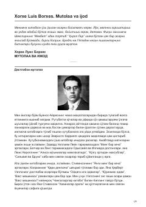

MVXorxe Luis Borxesning mutolaa va ijodiy jarayon haqidagi chuqur falsafiy mulohazalari.
Ushbu asar mashhur argentinalik yozuvchi Xorxe Luis Borxesning adabiyot, mutolaa va ijod jarayoni haqidagi fikr-mulohazalarini o'z ichiga oladi. Muallif o'zining bolalik xotiralari, kitoblar olami va ijodiy jarayondagi tasavvur kuchi haqida samimiy hikoya qiladi.